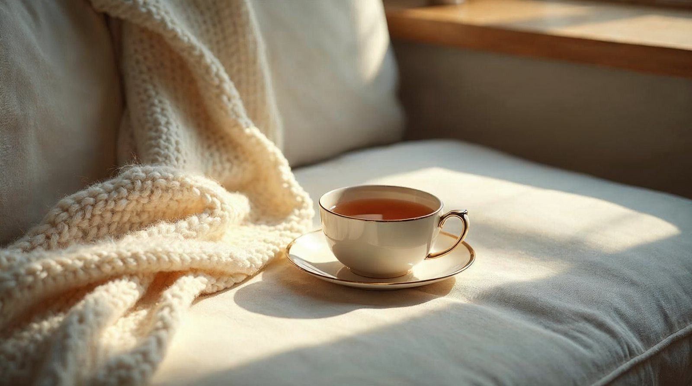

이종호 한의사 감수좋은꿈참사랑한의원 대표원장 (한의사 면허번호 19769)발행 2026-11-26 · 수정 2026-11-26
이 글의 차례
화장실에서 막 나왔는데 손을 씻다 말고 다시 돌아서게 됩니다. 분명히 다 본 것 같았는데 아랫배 안쪽에 무언가 남아 있는 느낌이 가시지 않습니다. 다시 변기 앞에 서 보면 몇 방울 나오다 말고, 그 찜찜함은 그대로입니다.
진료실에서 이 이야기를 꺼내시는 분들은 대개 한참 망설이다 말씀하십니다. 허리나 소화 이야기를 다 하고 일어서려다 "그런데 하나 더 있는데요" 하고 덧붙이시는 경우가 많습니다. 소변 이야기는 입 밖에 내기 어려운 주제라서 그렇습니다.
하지만 잔뇨감은 생각보다 흔한 불편이고, 이유도 여러 갈래입니다. 실제로 방광에 소변이 많이 남아 있는 경우도 있고, 소변은 거의 다 나갔는데 느낌만 남는 경우도 있습니다. 어느 쪽인지에 따라 살펴야 할 길이 달라집니다.
그래서 저는 부끄러워하지 마시고 편하게 말씀해 달라고 먼저 부탁드립니다. 하루에 몇 번 가시는지, 소변 줄기가 어떤지, 밤에 깨시는지 같은 이야기를 차근차근 나누다 보면 실마리가 보이기 시작합니다.
잔뇨감은 어떤 느낌을 말하나요
잔뇨감은 소변을 보고 난 뒤에도 방광이 다 비워지지 않은 것 같은 느낌입니다. 아랫배가 묵직하다, 요도 끝이 찜찜하다, 금방 또 가고 싶다처럼 표현하는 말은 사람마다 조금씩 다릅니다.
여기서 하나 나눠 볼 것이 있습니다. 실제로 소변이 방광에 많이 남는 것을 잔뇨라고 하고, 남은 양은 적은데 느낌만 남는 것을 잔뇨감이라고 부릅니다. 두 가지는 겉으로 비슷하지만 원인과 살펴볼 순서가 다릅니다.
실제로 얼마나 남는지는 소변을 본 직후 초음파로 방광에 남은 양을 재 보면 알 수 있습니다. 이 검사는 비뇨의학과에서 간단히 받을 수 있어서, 잔뇨감이 몇 주 이상 이어진다면 한 번쯤 확인해 두시길 권합니다.
왜 잔뇨감이 생길까요
잔뇨감의 이유는 크게 소변이 나가는 길이 좁아진 경우, 방광이 짜내는 힘이 약해진 경우, 방광과 요도 주변이 예민해진 경우로 나눠 볼 수 있습니다. 한 분에게 두세 가지가 겹치는 일도 흔합니다.
- 남성에게서 전립선이 커지며 요도를 누르는 경우
- 방광염이나 요도 주변 염증으로 방광이 예민해진 경우
- 출산이나 나이 들며 골반 바닥 근육이 느슨해지거나 반대로 지나치게 긴장한 경우
- 변비로 장이 방광을 누르는 경우
- 당뇨처럼 방광 신경에 영향을 줄 수 있는 질환이 있는 경우
- 감기약이나 일부 약이 방광이 짜내는 힘에 영향을 주는 경우
마음의 긴장도 빼놓을 수 없습니다. 화장실 가기 어려운 환경에서 오래 참는 습관이 있거나, 한 번 찜찜했던 경험 뒤로 소변볼 때마다 신경이 쏠리면 방광과 골반 근육이 쉽게 굳습니다. 그러면 검사에서는 큰 이상이 없는데도 느낌이 오래 남을 수 있습니다.
잠이 부족하거나 몸이 많이 지친 시기에도 잔뇨감이 도드라지곤 합니다. 피곤하면 방광과 골반 근육이 쉽게 굳고, 평소라면 지나쳤을 작은 감각에도 예민해지기 때문입니다. 그래서 저는 소변 이야기와 함께 요즘 하루가 얼마나 바쁘게 흘러가는지도 꼭 여쭙니다.
비슷해 보이지만 다른 불편들
잔뇨감과 함께 오기 쉬운 불편으로 빈뇨, 절박뇨, 야간뇨가 있습니다. 빈뇨는 하루 소변 횟수가 많은 것, 절박뇨는 갑자기 참기 힘들게 마려운 것, 야간뇨는 자다가 소변 때문에 깨는 것을 말합니다.
방광염은 소변볼 때 따갑고 아랫배가 아프며, 소변이 탁하거나 냄새가 달라지는 경우가 많습니다. 반면 전립선 비대로 인한 잔뇨감은 소변 줄기가 가늘고 시작이 늦으며, 다 보고 나서도 몇 방울 떨어지는 모습이 함께 나타나곤 합니다.
과민성 방광은 방광에 소변이 조금만 차도 급하게 신호를 보내는 상태입니다. 이때 느끼는 잔뇨감은 실제로 남아서라기보다 방광이 예민해서 생기는 경우가 많습니다. 어느 쪽인지 나눠야 생활 관리의 방향도 달라지니, 증상을 구체적으로 말씀해 주시는 것이 도움이 됩니다.
남성과 여성은 조금 다르게 살핍니다
남성은 전립선을 먼저 떠올립니다. 소변 줄기가 예전보다 약해졌는지, 한참 서 있어야 나오기 시작하는지, 보다가 끊겼다 다시 나오는지를 여쭙습니다. 이런 모습이 있다면 비뇨의학과에서 전립선 상태를 먼저 확인하시는 것이 좋습니다.
여성은 방광염 반복, 출산 경험, 골반 바닥 근육의 상태를 함께 봅니다. 기침하거나 웃을 때 소변이 새는지, 생리 주기에 따라 불편이 달라지는지, 변비가 있는지도 여쭙니다. 폐경 무렵에는 요도 주변 점막이 얇아지며 찜찜함이 늘기도 합니다.
연세가 드시면 남녀 모두 방광이 늘어나는 힘과 짜내는 힘이 조금씩 줄어듭니다. 그래서 예전과 같은 양의 물을 마셔도 화장실을 더 자주 찾게 되고, 다 본 뒤의 개운함도 덜하다고 느끼실 수 있습니다. 이런 변화는 자연스러운 부분도 있지만, 갑자기 달라졌다면 검사로 한 번 확인해 두시는 편이 마음이 놓입니다.
어느 쪽이든 공통으로 보는 것은 물 마시는 습관과 화장실 습관입니다. 너무 적게 마셔 소변이 진해져도 방광이 예민해지고, 너무 자주 미리 가는 습관도 방광이 적은 양에 익숙해지게 만들 수 있습니다.
소변을 오래 참거나 미리 가는 습관은 어떤 영향을 주나요
일하는 중에 자리를 비우기 어려워 소변을 오래 참는 분이 많습니다. 반대로 외출 전, 회의 전, 잠들기 전마다 마렵지 않아도 미리 다녀오는 분도 계십니다. 두 습관 모두 방광의 리듬을 흐트러뜨릴 수 있습니다.
오래 참으면 방광이 지나치게 늘어나 짜내는 힘이 떨어지고, 한 번에 다 비우지 못하는 느낌이 남기 쉽습니다. 너무 자주 미리 가면 방광이 조금만 차도 신호를 보내도록 길들여져 잔뇨감과 빈뇨가 함께 늘어나기도 합니다.
소변을 볼 때 서두르는 것도 한 가지 이유가 됩니다. 급하게 힘을 주어 밀어내거나, 다 끝나기 전에 일어나면 방광이 다 비워지지 않을 수 있습니다. 앉아서 보시는 분은 상체를 살짝 앞으로 기울이고, 다 본 뒤 잠시 기다렸다가 한 번 더 보는 방법이 도움이 될 수 있습니다.

계절과 몸의 온기에 따라 달라지기도 합니다
찬 바람이 부는 계절이 되면 잔뇨감과 빈뇨가 함께 늘었다고 말씀하시는 분이 많습니다. 몸이 차가워지면 땀으로 나가는 물이 줄어 소변량이 늘고, 아랫배와 골반 주변 근육도 움츠러들기 쉽기 때문입니다.
차가운 바닥이나 의자에 오래 앉아 계시는 분, 아랫배가 늘 서늘하다고 느끼시는 분은 겨울철에 불편이 더 두드러지곤 합니다. 한의학에서는 이런 모습을 아랫배의 온기와 함께 살피는데, 손발과 허리의 온도, 대변 상태를 같이 여쭤 보면 몸 전체의 흐름이 조금 더 잘 보입니다.
여름에는 반대로 땀을 많이 흘리고 물을 적게 마셔 소변이 진해지면서 따갑고 찜찜한 느낌이 늘기도 합니다. 계절이 바뀔 때 불편이 달라진다면, 그 변화 자체가 원인을 찾는 단서가 될 수 있으니 기억해 두셨다가 말씀해 주세요.
마음의 긴장과 잔뇨감은 어떻게 이어지나요
중요한 회의나 시험을 앞두면 화장실에 자꾸 가고 싶어지는 경험은 누구나 해 보셨을 겁니다. 긴장하면 방광이 예민해지고 골반 아래 근육이 단단해지면서, 소변을 다 본 뒤에도 시원하게 풀리지 않는 느낌이 남기 쉽습니다.
여기에 한 번 찜찜했던 기억이 더해지면, 소변을 볼 때마다 '또 남은 것 같다'는 생각에 온 신경이 쏠립니다. 그렇게 주의가 모이면 작은 감각도 크게 느껴지고, 다시 화장실을 찾는 일이 반복되며 불편이 이어지는 고리가 만들어집니다.
그래서 진료실에서는 잠과 긴장, 요즘 마음을 쓰는 일도 함께 여쭙습니다. 검사에서 큰 이상이 없다는 말을 들으셨는데도 찜찜함이 이어진다면, 몸을 느슨하게 풀어 주는 시간을 하루 중에 따로 마련하는 것만으로도 느낌이 한결 가벼워지는 분들이 계십니다.
먼저 이렇게 여쭙니다
처음 오시면 아래 질문들을 순서대로 여쭙습니다. 정확한 숫자가 아니어도 괜찮으니 대략적인 모습을 떠올려 와 주세요.
- 잔뇨감은 언제부터 있었고, 하루 중 언제 더 심한가요?
- 낮에 소변은 몇 번 정도 보시고, 밤에는 몇 번 깨시나요?
- 소변 줄기가 가늘거나 시작이 늦거나 중간에 끊기나요?
- 소변볼 때 따갑거나 아랫배가 아프신가요?
- 하루에 물, 커피, 차, 술은 어느 정도 드시나요?
- 드시는 약, 특히 감기약이나 혈압약, 당뇨 약이 있나요?
대변 상태도 꼭 여쭙니다. 변비가 있으면 장이 방광을 누르고 골반 근육이 함께 긴장해 잔뇨감이 더 커지기 쉽습니다. 소변과 대변은 같은 골반 안에서 이웃하고 있어서 한쪽이 불편하면 다른 쪽도 영향을 받습니다.
일상에서 먼저 해 볼 수 있는 것
잔뇨감을 덜기 위한 생활 관리는 방광이 편하게 차고 편하게 비워지도록 리듬을 되찾는 데서 시작합니다. 한꺼번에 바꾸기보다 하나씩 해 보세요.
- 물은 한꺼번에 많이 드시기보다 하루 동안 나눠 드시기
- 커피, 탄산음료, 술은 양을 줄이고 늦은 오후 이후에는 피하기
- 마렵지 않은데 습관처럼 미리 가는 횟수를 조금씩 줄이기
- 소변볼 때 서두르지 말고, 다 본 뒤 잠시 기다렸다 한 번 더 보기
- 변비가 있다면 채소와 물, 걷기로 장의 리듬부터 돕기
- 아랫배와 허리가 차지 않도록 옷차림 챙기기
골반 바닥 근육 운동도 도움이 될 수 있습니다. 소변을 참듯 골반 아래 근육을 살짝 조였다가 천천히 풀어 주는 동작인데, 조이는 것만큼 푸는 것도 중요합니다. 지나치게 긴장해 있는 분은 오히려 풀어 주는 연습이 먼저일 수 있어서, 처음에는 진료실에서 함께 방법을 확인하시는 편이 좋습니다.
잠들기 전 두 시간쯤은 물과 음료를 조금 줄여 보세요. 저녁 국물이나 과일도 수분이 많아 밤 소변을 늘릴 수 있습니다. 다만 하루 전체 물을 지나치게 줄이면 소변이 진해져 방광이 예민해질 수 있으니, 낮에 충분히 드시는 쪽으로 배분을 바꿔 보시면 됩니다.
한의원에서 함께 살필 수 있는 경우
- 비뇨의학과 검사에서 큰 이상은 없다는데 찜찜함이 이어지는 경우
- 아랫배와 허리, 손발이 차면서 소변이 자주 마려운 경우
- 긴장하거나 피곤한 날 잔뇨감이 유난히 심해지는 경우
- 변비와 잔뇨감이 함께 있어 골반 아래가 묵직한 경우
- 잔뇨감 때문에 밤에 자주 깨 잠이 얕아진 경우
좋은꿈참사랑한의원에 오시면 먼저 아래 '먼저 확인이 필요한' 신호가 없는지부터 봅니다. 그다음 맥을 짚고 아랫배와 허리의 긴장, 몸의 온기, 잠과 소화를 함께 살핍니다. 진찰한 내용을 바탕으로 침, 온열 관리, 한약 상담 가운데 지금 상태에 맞는 것을 고릅니다.
한약을 상의할 때는 드시는 약을 모두 확인하고 신중하게 정합니다. 전립선 약이나 방광 약을 처방받아 드시는 중이라면 한의원 진료와 함께 그대로 이어 가시고, 약을 줄이거나 멈추는 일은 처방한 선생님과 상의하셔야 합니다. 비뇨의학과 정기 진료와 한의원 진료는 나란히 갈 수 있습니다.
이렇게 기록해 오시면 상담이 쉬워집니다
배뇨 일지를 2~3일만 적어 보셔도 많은 것이 보입니다. 하루 종일이 부담스러우시면 쉬는 날 하루만 적어도 괜찮습니다.
- 소변본 시각과 대략의 양(많음, 보통, 적음)
- 마신 물과 음료의 종류, 시각
- 잔뇨감이 심했던 때와 그때 하고 있던 일
- 밤에 깬 횟수
- 대변 상태와 변비 여부
- 긴장했거나 오래 참았던 날 표시
기록을 보면 의외로 음료를 마신 시각과 잔뇨감이 겹치거나, 오래 참은 날과 찜찜한 날이 겹치는 모습이 드러나곤 합니다. 그 연결을 찾는 것이 생활에서 바꿀 것 하나를 고르는 출발점이 됩니다.
휴대폰 메모장에 시각과 한 줄만 적어도 충분합니다. 다음에 오실 때 그 메모를 함께 펼쳐 보면, 말로만 설명하실 때보다 훨씬 빠르게 지금 몸의 흐름을 함께 짚어 볼 수 있습니다.
이런 증상은 먼저 확인이 필요합니다
- 소변이 전혀 나오지 않고 아랫배가 부풀어 오르며 심하게 아픈 경우
- 소변에 피가 섞이거나 열이 나고 옆구리가 아픈 경우
이런 신호가 있으면 한의원보다 가까운 병원이나 응급실을 먼저 찾으세요.
함께 읽으면 좋은 글
- 소변이 너무 자주 마려운 빈뇨, 물·카페인·방광 습관·혈당은 어떻게 나눠 살피나요?
- 전립선 비대가 있다는 말을 들었을 때, 비뇨의학과 치료와 함께 생활에서는 무엇을 살피나요?
- 방광염이 자꾸 재발할 때는 무엇을 확인하고, 재발 사이의 몸은 어떻게 살피나요?
- 기침할 때 새거나 화장실까지 참기 힘든 요실금, 복압성과 절박성은 어떻게 나눠 살피나요?
- 자다가 소변 때문에 깨면 잠과 어떤 관련이 있고, 무엇을 살펴보나요?

여쭙는 것
- 잔뇨감은 언제부터 있었고, 하루 중 언제 더 심한가요?
- 낮에 소변은 몇 번 정도 보시고, 밤에는 몇 번 깨시나요?
- 소변 줄기가 가늘거나 시작이 늦거나 중간에 끊기나요?
생활에서 해 볼 것
- 물은 한꺼번에 많이 드시기보다 하루 동안 나눠 드시기
- 커피, 탄산음료, 술은 양을 줄이고 늦은 오후 이후에는 피하기
- 마렵지 않은데 습관처럼 미리 가는 횟수를 조금씩 줄이기
한의원에서 함께 살필 것
- 비뇨의학과 검사에서 큰 이상은 없다는데 찜찜함이 이어지는 경우
- 아랫배와 허리, 손발이 차면서 소변이 자주 마려운 경우
- 긴장하거나 피곤한 날 잔뇨감이 유난히 심해지는 경우
먼저 확인이 필요한 신호
- 소변이 전혀 나오지 않고 아랫배가 부풀어 오르며 심하게 아픈 경우
- 소변에 피가 섞이거나 열이 나고 옆구리가 아픈 경우
한눈에 보는 표
| 구분 | 핵심 |
|---|---|
| 여쭙는 것 | 잔뇨감은 언제부터 있었고, 하루 중 언제 더 심한가요? 낮에 소변은 몇 번 정도 보시고, 밤에는 몇 번 깨시나요? |
| 생활에서 해 볼 것 | 물은 한꺼번에 많이 드시기보다 하루 동안 나눠 드시기 커피, 탄산음료, 술은 양을 줄이고 늦은 오후 이후에는 피하기 |
| 한의원에서 함께 살필 것 | 비뇨의학과 검사에서 큰 이상은 없다는데 찜찜함이 이어지는 경우 아랫배와 허리, 손발이 차면서 소변이 자주 마려운 경우 |
| 먼저 확인이 필요한 신호 | 소변이 전혀 나오지 않고 아랫배가 부풀어 오르며 심하게 아픈 경우 소변에 피가 섞이거나 열이 나고 옆구리가 아픈 경우 |
자주 묻는 질문
잔뇨감이 있으면 전립선 문제인가요?
남성에게서 흔한 이유 가운데 하나이지만 전부는 아닙니다. 방광이 예민해졌거나 골반 근육이 긴장했거나 변비가 있어도 비슷한 느낌이 생길 수 있어서, 비뇨의학과 검사로 먼저 확인해 보시길 권합니다.
여성도 잔뇨감이 생기나요?
네, 여성도 흔히 겪습니다. 방광염이 반복되었거나 출산 뒤 골반 바닥 근육이 달라졌거나, 폐경 무렵 요도 주변 점막이 얇아지며 찜찜함이 늘기도 합니다.
물을 적게 마시면 잔뇨감이 줄어드나요?
화장실 가는 횟수는 잠시 줄 수 있지만, 소변이 진해지면 방광이 더 예민해질 수 있습니다. 하루 동안 나눠 마시고 늦은 저녁에만 조금 줄이는 쪽을 권합니다.
비뇨의학과 약을 먹는 중인데 한의원 진료를 받아도 되나요?
함께 받으실 수 있습니다. 드시는 약 이름을 알려 주시면 그에 맞춰 진료 방향을 정하고, 처방받은 약은 처방한 선생님과 상의 없이 멈추지 않으시도록 안내합니다.
잔뇨감 때문에 소변을 볼 때 힘을 세게 주면 도움이 되나요?
힘을 세게 주어 밀어내면 골반 근육이 더 긴장할 수 있습니다. 편하게 앉거나 서서 숨을 내쉬며 기다리고, 다 본 뒤 잠시 쉬었다 한 번 더 보는 방법을 먼저 권합니다.
좋은꿈참사랑한의원은 재진 때 지난번 이야기부터 이어서 여쭙니다. 진료시간과 예약은 오시는 길에서 확인하세요.
어디서 상담받을 수 있나요?
좋은꿈참사랑한의원은 서울 동작구 만양로2길 2 신성빌딩 3층·5층(서울 동작구 상도동, 7호선 상도역 3번 출구 근처)에 있습니다. 한의사 3명(이종호 대표원장, 조영기 수석진료원장, 정원영 진료원장)이 진료합니다. 진료시간은 평일 09:30~20:00(점심 13:00~14:00), 토·일·공휴일 09:30~15:00이며, 방문 전 전화로 확인을 권합니다. 예약은 네이버 예약, 카카오톡 상담, 전화 02-815-7510로 받습니다.
이 글은 일반적인 건강 정보이며 개인의 진단이나 치료를 대신하지 않습니다. 증상이 있거나 복용 중인 약이 있다면 진료를 통해 확인하세요. 치료 효과는 개인마다 다를 수 있습니다.
작성 기준: 일반적으로 알려져 있는 건강 정보를 참고해 정리했습니다(대표원장 감수). 증상 기록은 1~2주 동안 하루 1회, 비슷한 시간에 적어 오시면 지난 상태와 비교하기 쉽습니다.